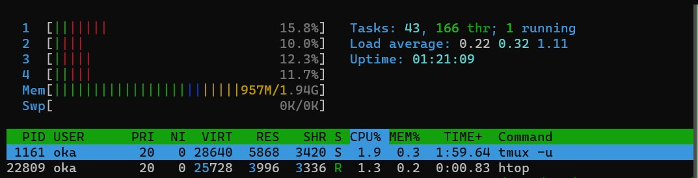

『ゼロからのOS自作入門』 (みかん本)
のやっていき記録
- 『ゼロからのOS自作入門』 (Amazon)

やっていくぞ pic.twitter.com/HQXCaWztCs
— oka ఒక (@nowohyeah) March 22, 2021
このページは mdBook で作っています。ソースコードは以下にあります。
https://github.com/pn11/mikan-book
環境構築
uchan さんの script など
以下のリポジトリの説明に従って行う。
home directory に edk2 と osbook という directories がある状態になる1。
osbook directory は本だと workspace となっているが、どこでも良いとなっているので、分かり易い repository の方に合わせた。
VcXsrv
VcXsrv の設定は、みかん本の付録Aに書いてある内容では不充分だと思う。
- WSL2のX-ServerでGUI表示する際に「export DISPLAY=:0.0」が効かない - レガシー環境から脱却したい
- 元の GitHub issue -> Can't use X-Server in WSL 2 · Issue #4106 · microsoft/WSL
などに書いてあるが、 /etc/resolve.conf に書いてある IP アドレスを DISPLAY=xx.xx.xx.xx:0.0 に入れないと動かない。
cat /etc/resolv.conf | grep nameserver | awk '{print $2}'
のように IP address を取得できるので、以下を ~/.bash_profile などに書いておく。
export DISPLAY=$(cat /etc/resolv.conf | grep nameserver | awk '{print $2}'):0.0
第0章
MikanOS (みかのすと読むらしい) を WSL2 でビルドして QEMU で動かした～
— oka ఒక (@nowohyeah) March 27, 2021
WSL2 のメモリ消費バグがつらい#ゼロからのOS自作入門 pic.twitter.com/OMFjuo9BcI
WSL2 のメモリ枯渇問題については以下の記事のように対処すれば良いことが分かった。
RAM 4 GB の人権無視マシンを使っているので、 WSL への割り当ては 2 GB とした。 WSL2 再起動後に htop すると 2 GB になっていることが分かる。

第1章
binary editor で EFI file を作って QEMU で動かすのを目標にする。 USB メモリとかは面倒なのでやらない。けっこう進んだらやってみてもよいけど。
EFI ファイル作成
binary editor は本では okteta や Binary Editor Bz が紹介されているが、 CLI で使える hexedit でやってみる。
sudo apt install hexedit
touch BOOTX64.EFI
hexedit BOOTX64.EFI
打ち込んでいるところ

QEMU で起動
本当は qemu の command を打たないといけないが、用意されている script を使う。
$HOME/osbook/devenv/run_qemu.sh BOOTX64.EFI
まごころこめて手打ちした binary が起動すると感慨もひとしお。

C 言語で hello world
cd $HOME/osbook/day01/c
clang -target x86_64-pc-win32-coff -mno-red-zone -fno-stack-protector -fshort-wchar -Wall -c hello.c
lld-link /subsystem:efi_application /entry:EfiMain /out:hello.efi hello.o
$HOME/osbook/devenv/run_qemu.sh hello.efi
でさっきと同様に Hello world が表示される。
cmp BOOTX64.EFI ~/osbook/day01/c/hello.efi
で binary を比較すると
differ: byte 3, line 1
と出た。 hexedit で開くとその他の場所もけっこう違っていた。
第2章
2.2 EDK II でハローワールド
EDK II を使うと色々簡単に書けるらしい。 p.50, 51 の指示に従い build したあと、
$HOME/osbook/devenv/run_qemu.sh $HOME/edk2/Build/MikanLoaderX64/DEBUG_CLANG38/X64/Loader.efi
を実行すると、
が表示される。
最近 C/C++ 書かないのでインクルードガードとか久しぶりに思い出した (コラム 2.1)。
2.7 メモリマップの確認
本の指示に従って MikanOS を build し、 QEMU で起動する。起動後にできた disk.img を mount してその中の memmap という CSV file を確認すると以下のようになっていた。
$ cat mnt/memmap
Index, Type, Type(name), PhysicalStart, NumberOfPages, Attribute
0, 3, EfiBootServicesCode, 00000000, 1, F
1, 7, EfiConventionalMemory, 00001000, 9F, F
2, 7, EfiConventionalMemory, 00100000, 700, F
3, A, EfiACPIMemoryNVS, 00800000, 8, F
4, 7, EfiConventionalMemory, 00808000, 8, F
5, A, EfiACPIMemoryNVS, 00810000, F0, F
6, 4, EfiBootServicesData, 00900000, B00, F
7, 7, EfiConventionalMemory, 01400000, 3AB36, F
8, 4, EfiBootServicesData, 3BF36000, 20, F
9, 7, EfiConventionalMemory, 3BF56000, 270F, F
10, 1, EfiLoaderCode, 3E665000, 2, F
11, 4, EfiBootServicesData, 3E667000, 217, F
12, 3, EfiBootServicesCode, 3E87E000, B6, F
13, A, EfiACPIMemoryNVS, 3E934000, 12, F
14, 0, EfiReservedMemoryType, 3E946000, 1C, F
15, 3, EfiBootServicesCode, 3E962000, 10A, F
16, 6, EfiRuntimeServicesData, 3EA6C000, 5, F
17, 5, EfiRuntimeServicesCode, 3EA71000, 5, F
18, 6, EfiRuntimeServicesData, 3EA76000, 5, F
19, 5, EfiRuntimeServicesCode, 3EA7B000, 5, F
20, 6, EfiRuntimeServicesData, 3EA80000, 5, F
21, 5, EfiRuntimeServicesCode, 3EA85000, 7, F
22, 6, EfiRuntimeServicesData, 3EA8C000, 8F, F
23, 4, EfiBootServicesData, 3EB1B000, 4DA, F
24, 7, EfiConventionalMemory, 3EFF5000, 4, F
25, 4, EfiBootServicesData, 3EFF9000, 6, F
26, 7, EfiConventionalMemory, 3EFFF000, 1, F
27, 4, EfiBootServicesData, 3F000000, A1B, F
28, 7, EfiConventionalMemory, 3FA1B000, 1, F
29, 3, EfiBootServicesCode, 3FA1C000, 17F, F
30, 5, EfiRuntimeServicesCode, 3FB9B000, 30, F
31, 6, EfiRuntimeServicesData, 3FBCB000, 24, F
32, 0, EfiReservedMemoryType, 3FBEF000, 4, F
33, 9, EfiACPIReclaimMemory, 3FBF3000, 8, F
34, A, EfiACPIMemoryNVS, 3FBFB000, 4, F
35, 4, EfiBootServicesData, 3FBFF000, 201, F
36, 7, EfiConventionalMemory, 3FE00000, 8D, F
37, 4, EfiBootServicesData, 3FE8D000, 20, F
38, 3, EfiBootServicesCode, 3FEAD000, 20, F
39, 4, EfiBootServicesData, 3FECD000, 9, F
40, 3, EfiBootServicesCode, 3FED6000, 1E, F
41, 6, EfiRuntimeServicesData, 3FEF4000, 84, F
42, A, EfiACPIMemoryNVS, 3FF78000, 88, F
43, 6, EfiRuntimeServicesData, FFC00000, 400, 1
なお mkdir -p mnt とすると mnt が既に存在していても error にならないと初めて知った！ 今まで if [ -e mnt ]; then mkdir mnt; fi ってやってたよ。。
第3章
3.3 初めてのカーネル
p. 73 の手順で kernel file を作成する。これが初めての OS で、これまで動かしていたのは boot loader らしい。
kernel の情報は readelf で見れる (-h は header を表示する option)。
$ readelf -h kernel.elf
ELF Header:
Magic: 7f 45 4c 46 02 01 01 00 00 00 00 00 00 00 00 00
Class: ELF64
Data: 2's complement, little endian
Version: 1 (current)
OS/ABI: UNIX - System V
ABI Version: 0
Type: EXEC (Executable file)
Machine: Advanced Micro Devices X86-64
Version: 0x1
Entry point address: 0x101000
Start of program headers: 64 (bytes into file)
Start of section headers: 8928 (bytes into file)
Flags: 0x0
Size of this header: 64 (bytes)
Size of program headers: 56 (bytes)
Number of program headers: 4
Size of section headers: 64 (bytes)
Number of section headers: 14
Section header string table index: 12
kernel を boot loader で動かすには p. 80 の手順を実行する。なおこの部分は、4行目に source edksetup.sh が入るべきなのが抜けていると思われる。
$ $HOME/osbook/devenv/run_qemu.sh $HOME/edk2/Build/MikanLoaderX64/DEBUG_CLANG38/X64/Loader.efi $HOME/osbook/mikanos/kernel/kernel.elf
を実行すると以下のように表示された。

terminal で QEMU モニタを以下のように動かせた。
(qemu) info registers
RAX=0000000000100000 RBX=000000003effef18 RCX=0000000000000000 RDX=0000000000000000
RSI=000000003feaca08 RDI=000000003feac9e0 RBP=000000003fea8850 RSP=000000003fea8850
R8 =000000003fea87c4 R9 =000000003fb7b48f R10=000000003fbcd018 R11=fffffffffffffffc
R12=000000003effe920 R13=000000003feac8d0 R14=000000003fea9110 R15=000000003e66573c
RIP=0000000000101011 RFL=00000046 [---Z-P-] CPL=0 II=0 A20=1 SMM=0 HLT=1
ES =0030 0000000000000000 ffffffff 00cf9300 DPL=0 DS [-WA]
CS =0038 0000000000000000 ffffffff 00af9a00 DPL=0 CS64 [-R-]
SS =0030 0000000000000000 ffffffff 00cf9300 DPL=0 DS [-WA]
DS =0030 0000000000000000 ffffffff 00cf9300 DPL=0 DS [-WA]
FS =0030 0000000000000000 ffffffff 00cf9300 DPL=0 DS [-WA]
GS =0030 0000000000000000 ffffffff 00cf9300 DPL=0 DS [-WA]
LDT=0000 0000000000000000 0000ffff 00008200 DPL=0 LDT
TR =0000 0000000000000000 0000ffff 00008b00 DPL=0 TSS64-busy
GDT= 000000003fbee698 00000047
IDT= 000000003f306018 00000fff
CR0=80010033 CR2=0000000000000000 CR3=000000003fc01000 CR4=00000668
DR0=0000000000000000 DR1=0000000000000000 DR2=0000000000000000 DR3=0000000000000000
DR6=00000000ffff0ff0 DR7=0000000000000400
EFER=0000000000000500
FCW=037f FSW=0000 [ST=0] FTW=00 MXCSR=00001f80
FPR0=0000000000000000 0000 FPR1=0000000000000000 0000
FPR2=0000000000000000 0000 FPR3=0000000000000000 0000
FPR4=0000000000000000 0000 FPR5=0000000000000000 0000
FPR6=0000000000000000 0000 FPR7=0000000000000000 0000
XMM00=00000000000000000000000000000000 XMM01=00000000000000000000000000000000
XMM02=00000000000000000000000000000000 XMM03=00000000000000000000000000000000
XMM04=00000000000000000000000000000000 XMM05=00000000000000000000000000000000
XMM06=00000000000000000000000000000000 XMM07=00000000000000000000000000000000
XMM08=00000000000000000000000000000000 XMM09=00000000000000000000000000000000
XMM10=00000000000000000000000000000000 XMM11=00000000000000000000000000000000
XMM12=00000000000000000000000000000000 XMM13=00000000000000000000000000000000
XMM14=00000000000000000000000000000000 XMM15=00000000000000000000000000000000
(qemu)
(qemu) x /2i 0x101011
0x0000000000101011: jmp 0x101010
0x0000000000101013: int3
(qemu)
(qemu) x /2i 0x101010
0x0000000000101010: hlt
0x0000000000101011: jmp 0x101010